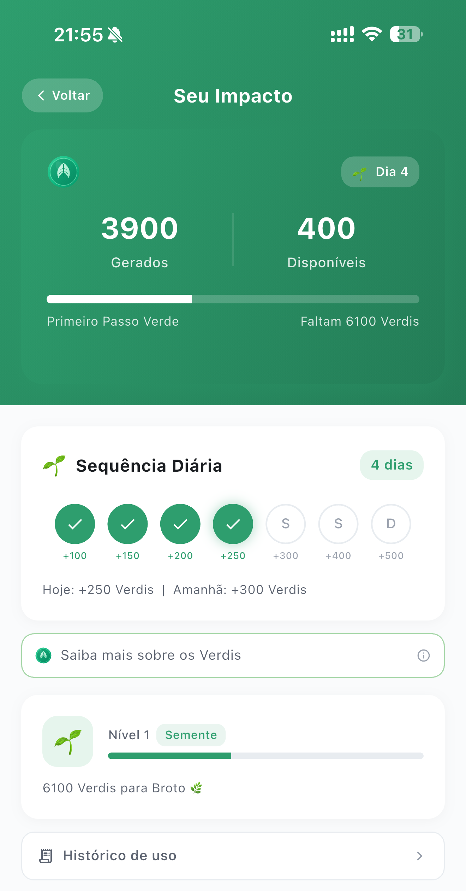
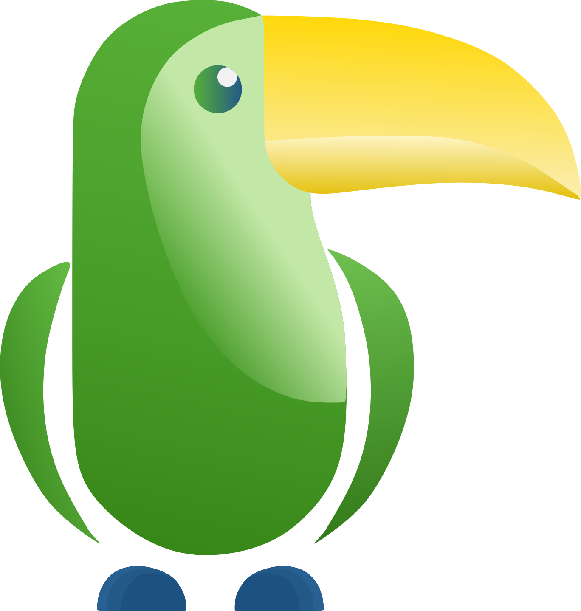

Usar IA aqui não custa
pro planeta. Devolve.
Enquanto as IAs gringas queimam energia em datacenter, o Tupham roda no seu celular e transforma cada uso em impacto ambiental real — rastreável e auditável.
Do toque na tela
à floresta em pé.
Cinco passos simples. Você só usa o app do seu jeito — o impacto acontece junto, sem esforço extra.
1 · Você usa o Tupham
Cada conversa, pesquisa e interação gera Verdis automaticamente. Quem é gratuito também gera Verdis ao ver anúncios. Sem esforço extra.
2 · Acompanhe seu impacto
Na tela "Seu Impacto" você vê seus Verdis, seu nível verde — de Semente a Amazônia — e quanto falta pro próximo marco.
3 · Acelere se quiser
Sequência diária, quiz ambiental, compartilhar e convidar amigos rendem Verdis extras. Quanto mais você se envolve, mais sua floresta cresce.
4 · Verdis viram floresta
Seus Verdis equivalem a impacto: árvores plantadas, CO₂ compensado e m² de mata preservada. É a camada que traduz o uso do app em algo que dá pra enxergar.
5 · Nos bastidores
Uma parte da nossa receita é sempre destinada a ONGs ambientais parceiras, consolidada e auditada por terceiros independentes.
Ver a auditoria
Cada Verdi tem peso no mundo real.
Somando o uso de todo mundo, a comunidade ajuda a plantar, compensar e preservar — é o impacto coletivo, não um ato individual literal.

A moeda verde
do Tupham.
Verdis são gerados automaticamente com o uso do app — e também desbloqueiam funções premium pra quem é gratuito. Quanto mais você usa, mais Verdis acumula.
- Vale de verdade: pequeno por unidade, grande no acumulado da comunidade.
- Boas-vindas: novos usuários já começam com um bônus de Verdis.
- Premium acumula mais: um bom bônus de Verdis todo mês pra quem assina.
- Dupla função: medem seu impacto verde e ainda destravam recursos dentro do app.
Quanto mais você usa,
mais sua floresta cresce.
Você começa como uma Semente e evolui a cada marco. Cada nível é um pedaço a mais de floresta que você ajudou a manter de pé.
Não é greenwashing.
É pra ser auditado.
Nosso compromisso é simples: destinar uma parte da nossa receita a ONGs ambientais parceiras, consolidar tudo e abrir pra auditoria por terceiros independentes. O painel público de doações e a auditoria são compromissos declarados — e vão estar abertos pra você conferir.
Baixe. Use.
Refloreste.
A IA do Brasil, no seu bolso — e cada conversa vira impacto verde. Comece grátis hoje.